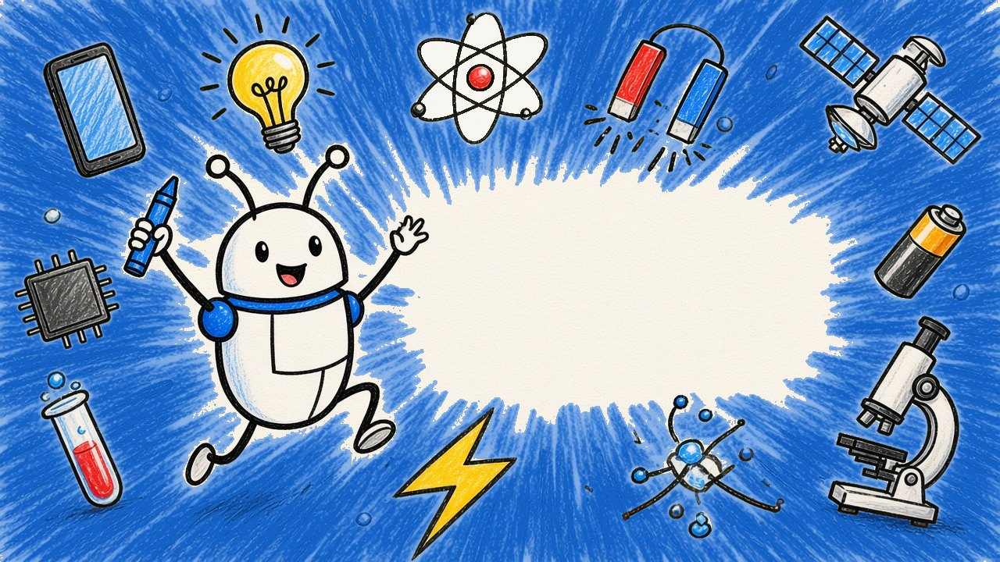
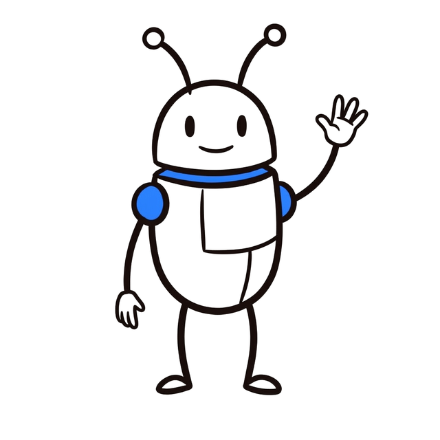

Ciencia
La física, la química y las matemáticas que hay detrás de las cosas de todos los días.
- ¿Por qué se gasta la batería con los años?
- ¿Cómo sabe el GPS dónde estás?

Canal de YouTube en español
¿Tu celular te escucha? ¿Por qué se gasta la batería con los años? ¿Cómo sabe el GPS dónde estás? Te mostramos cómo funciona por dentro lo que usas cada día, con dibujos, paso a paso y junto a Buge.
Ver el canal en YouTubeEmpezamos por algo que tienes en la mano o que te pasa a diario, y desde ahí llegamos a la explicación, desde lo más básico hasta lo más avanzado, con rigor y con fuentes.
La física, la química y las matemáticas que hay detrás de las cosas de todos los días.
Internet, seguridad, privacidad e inteligencia artificial, sin dar nada por sabido.
Tres de nuestros videos recientes.
Un tema a fondo, dibujado paso a paso.
Shorts con historias y noticias.

Los videos completos están en YouTube. Los Shorts los publicamos en YouTube, Instagram, Facebook, TikTok y X.
Para preparar los videos y aprender de los resultados usamos herramientas propias: «Connectech Glob Pipeline» (Google) y «Connectech Glob Metricas» (Meta y TikTok). Solo las usa el equipo del canal y solo leen las estadísticas de nuestras propias cuentas. Te contamos los detalles en la política de privacidad.